Special Delivery
郵便ロボットのPostbotが、浮遊島が離れ離れになる前に最後の荷物を配達する、3つのレベルで構成された三人称視点のゲームです。プレイヤーは荷物を運び、投げて、配達パッドまで届けます。
A third-person game in three levels. As Postbot, a postal robot, the player carries and throws the last parcels of a floating-island route to their delivery pads before the islands drift apart.
Epic Gamesのサンプルプロジェクト「Stack O Bot」をベースに、チームで制作しました。システムやBlueprint、敵AIの実装は、主に他のメンバーが担当しています。
Built by the team on Epic Games' sample project Stack O Bot. The systems, Blueprints, and enemy AI were mainly implemented by other team members.
動画と基本ルールVideo and Core Rules
-
荷物を配達パッドへ運ぶCarry parcels to delivery pads
どのレベルでも繰り返す中心の行動です。配達パッドは受け取る荷物が決まっていて、違う荷物を置くと弾かれます。
The action repeated in every level. Each pad accepts only its own parcel; the wrong one is knocked off.
-
運搬中はジャンプできないNo jumping while carrying
荷物を持っている間は、ジャンプもジェットパックも使えません。荷物を上へ運ぶにはスロープやリフトなどを使い、隙間は荷物を投げて越えます。下りの段差は一方通行で、高い位置から投げるほど遠くへ届きます。
Holding a parcel disables jumping and the jetpack. A parcel goes up only by ramps, lifts, and similar routes, and crosses a gap only when thrown. Drops are one-way, and a throw reaches further from height.
-
敵に当たると荷物を落とすEnemies knock the parcel loose
敵(Mite)の攻撃を受けると、持っている荷物を落とします。落ちた荷物は、数秒後に元の置き場へ戻ります。
A hit from an enemy (a Mite) makes Postbot drop the parcel. A parcel that falls returns to its starting depot after a few seconds.
トップダウン図Top-Down Diagrams
3つのレベルそれぞれについて、目的の違う3種類の図を作りました(チームと協力して作成)。いずれもLDD(レベルデザインドキュメント)に掲載した、提出時点のレベルの図です。画像をクリックすると原寸で開きます。
For each of the three levels I drew three kinds of diagram, each with a different job (made together with the team). All show the levels as they stood when the level design document was submitted. Click any diagram to open it at full size.
区間の役割と運搬ルートSection roles and the carry route
各モジュールを役割(learn/develop/twist/finale/support/rest)で色分けし、荷物を運ぶルートを線で示しました。
Each module is coloured by its role (learn, develop, twist, finale, support, rest), and the route the parcel travels is drawn as a line.
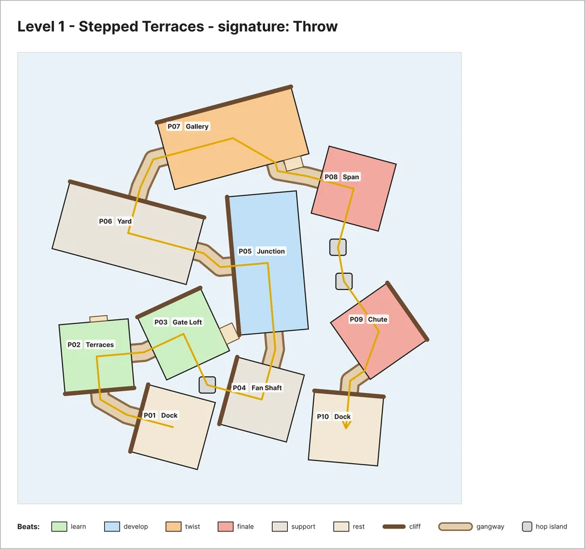
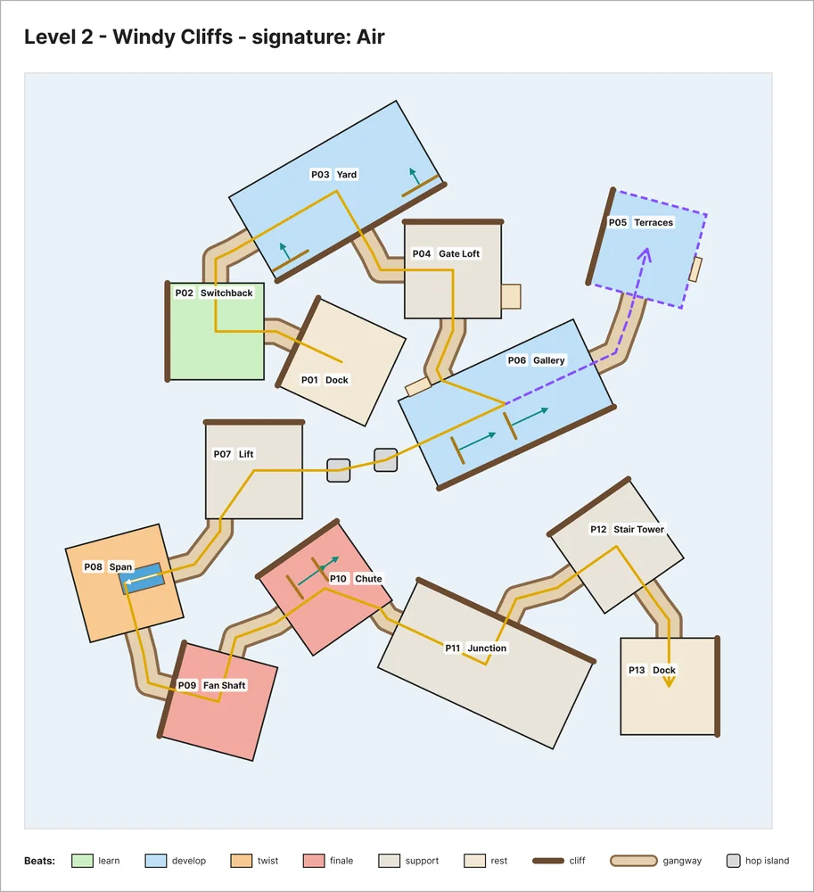
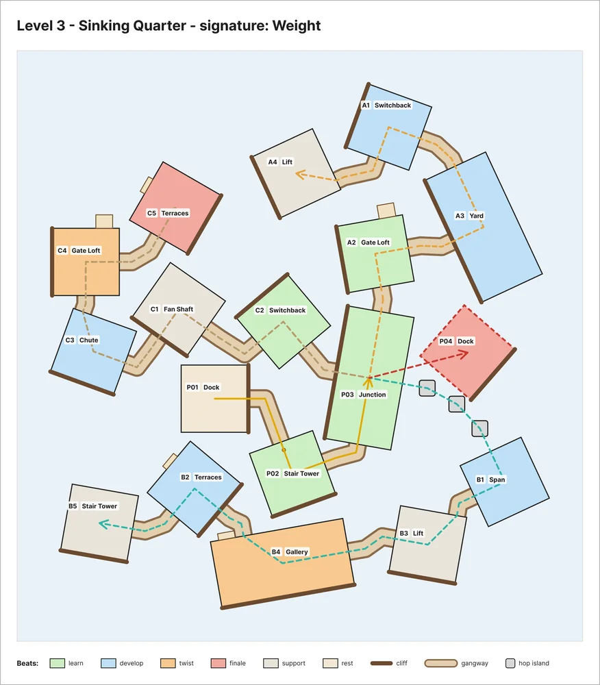
高さとオブジェクトの配置Heights and every object
床の高さをグレーの濃淡で示し、スタンプ、荷物、敵、NPC、仕掛けなどの配置をすべて記号で書き込みました。
Floor height is shaded in grey, and every stamp, parcel, enemy, NPC, and mechanism is marked with a symbol.
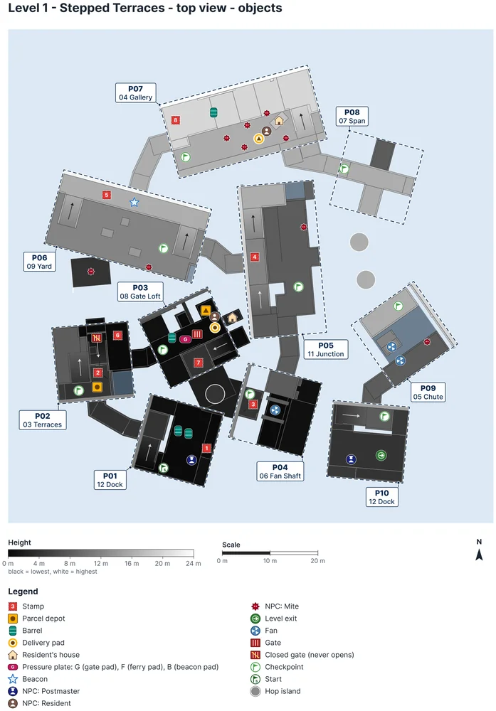
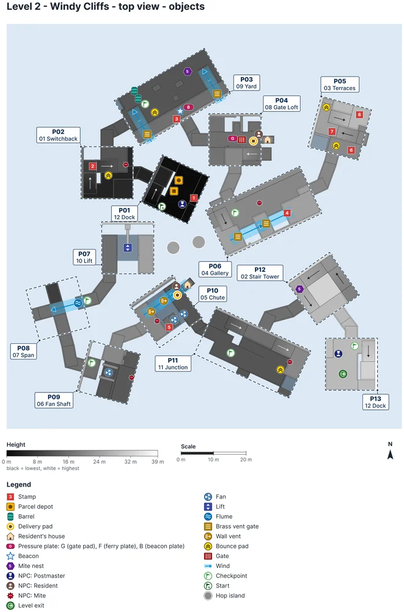
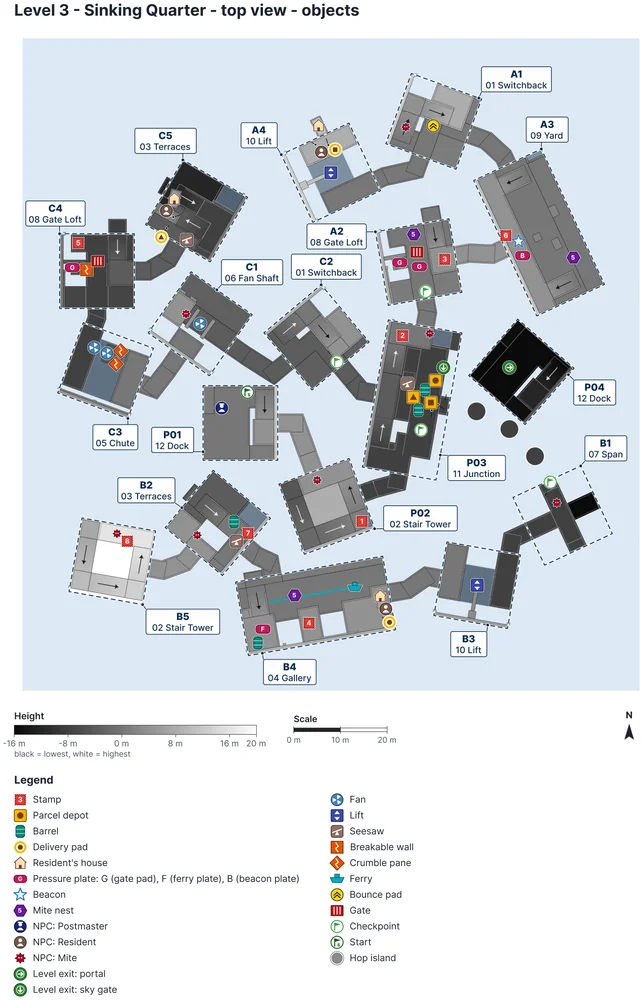
ビート(体験の区切り)Beats
高さの図に、プレイヤーが体験する順番を番号で重ねました。
The height view again, overlaid with numbered beats in the order the player meets them.
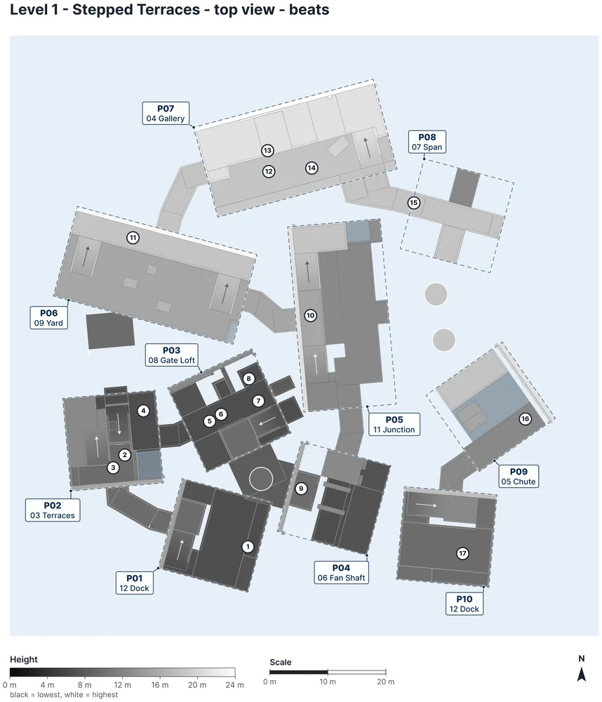
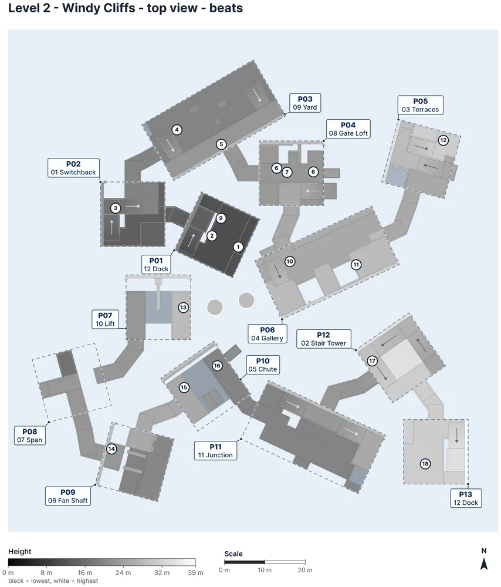
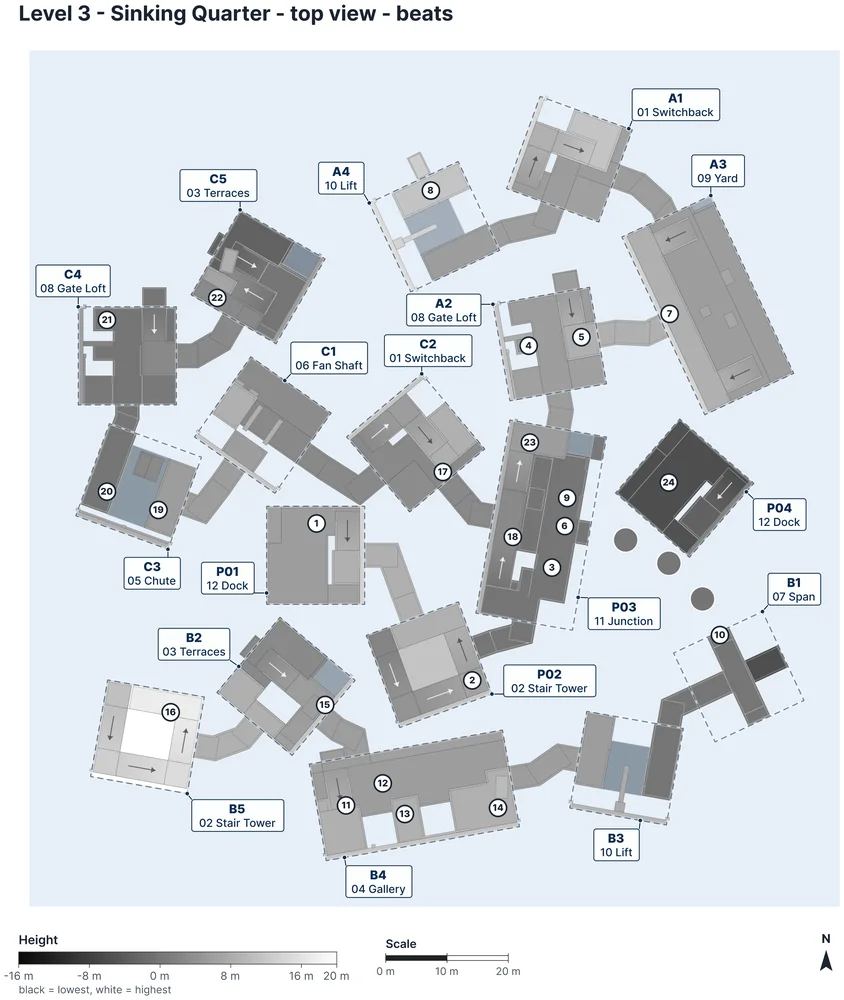
設計の土台とレイアウトの変遷Design Foundations and Layout History
以下はチームで決めた、LDD提出時点の設計の土台です。私はこの方針のもとで、草案レベルの改善とトップダウン図の作成を担当しました。
These are the team's design foundations as of the level design document. Within them, my part was improving the draft levels and drawing the top-down diagrams.
-
上りは手間、下りは自由Up costs, down is free
運搬中はジャンプできないため、荷物を上げる手段は限られます。下りは一方通行で自由に降りられ、高い位置からの投げはより遠くへ届きます。
Without a jump while carrying, there are only a few ways to raise a parcel. Drops are free and one-way, and throwing from height reaches further.
-
樽にはそれぞれ役割があるEvery barrel has a role
レベル内の樽は、ドアの押さえ、足場、重り、投げる物のどれか一つに使います。どの順番で使うかがパズルになります。
Each barrel is spent on one role: doorstop, step, counterweight, or projectile. The order you spend them in is the puzzle.
-
12個のモジュールの使い回しOne kit, reused
3つのレベルすべてを、崖沿いの町を構成する12個のモジュールから組み立てています。
All three levels are built from one kit of twelve cliff-side town modules.
レイアウトは4回作り直しましたFour layouts
アート作業に入ってからの大きな変更は手間がかかるため、変更しやすいうちにチームでレイアウトを作り直しました。
Large changes are costly once art is in, so the team reworked the layout while it was still cheap to do so.
プレイテスト1回目と、チームの改修計画First Playtest and the Team's Revision Plan
2026年10月3日のビルドを、私が通しでプレイして記録しました。チームメンバーとしてのプレイで、初見のプレイヤーによるテストではありません。
I played the 3 October 2026 build end to end and recorded what I found. This was my own play as a team member, not a test with first-time players.
LDDの進捗報告にも同じ所要時間が記載され、「ビルドはできているが長すぎる」として改修計画(LDD 表4.1)が立てられました。以下では、私の指摘と提案を、改修計画の対応する項目と並べています。「改修計画の項目」は計画であり、実装の記録ではありません。
The design document's progress report gives the same times and concludes the build "runs too long", which led to the team's revision plan (Table 4.1). Below, each of my findings and proposals sits next to the matching plan item. The plan items are what was planned, not a record of what was implemented.
-
道に迷うGetting lost
L3では地図がなく、どこへ行くべきか分かるまでに約5〜10分かかった(私の推定)。L1でも序盤で脇道に入れてしまい、進む方向が分かりにくかった。
With no map in L3, I estimate I spent 5–10 minutes working out where to go. In L1, a side route open at the start made the intended direction unclear.
- 私の提案My proposal
- 目印、標識、目的地の見通しで分岐を見分けやすくし、完了した配達や分岐を示す。L1序盤の脇道は塞ぐ。Make branches distinguishable with landmarks, signs, and clear views of objectives, and show which deliveries are done. Block the early side route in L1.
- 改修計画の項目Plan item
- 配達先へ導く案内表示を追加
- 配達先に、レベルの各所から見える光の柱を設置
- 次の配達先へ導く「黄色いペイント」を追加
- More signage guiding players to deliveries
- Light beacons at delivery destinations, visible across the level
- "Yellow paint" leading to the next delivery
-
同じ道の往復が多いBacktracking
L2ではT. Okaforへの配達後、来た道を戻る必要があった。L3でも、タスクの合間に何度もレベルを横断した。
In L2, after the delivery to T. Okafor I had to walk back the way I came. In L3 I crossed the level repeatedly between tasks.
- 私の提案My proposal
- 次の荷物を最初の配達先の近くに置くか、短い帰り道を用意する。L3では分岐を終えたらハブへ戻る近道を設ける。Place the next parcel near the first destination or add a shorter return; in L3, add shortcuts back to the hub after each branch.
- 改修計画の項目Plan item
- 荷物の受け取り場所を配達先の近くへ移すMove parcel pickups closer to their destinations
-
後半で荷物を落とすと、やり直しの負担が大きいLosing a later parcel hurts
L2・L3で、2つ目以降の荷物を落としたときに、それまでの手間が無駄になったように感じた。
In L2 and L3, dropping the second or a later parcel felt like losing a lot of effort.
- 私の提案My proposal
- 荷物の戻り先と復帰にかかる時間を確認し、近い戻り先か早い回収ルートを用意する。戻り先を分かりやすくする。Check where parcels return and how long recovery takes; add a nearer return point or faster route, and make the return location clear.
- 改修計画の項目Plan item
- 各リスポーン地点に、荷物の回収ポストを追加A parcel recovery mailbox at every respawn checkpoint
-
荷物を持つと狭いToo narrow while carrying
階段の入口(L1〜L3)や一部の通路(L2)が、荷物を持って進むには狭かった。
Stair entrances (L1–L3) and some paths (L2) felt too narrow to move through with a parcel.
- 私の提案My proposal
- 入口や踊り場を広げ、荷物を持った状態で確かめる。精度を試す区間は残す。Widen entrances and landings and test them while carrying, keeping the sections meant to test precision.
- 改修計画の項目Plan item
- 一部のモジュールで、階段の踊り場と通路を広げるWiden stair landings and paths on some modules
-
敵の巣が見分けにくいNests were hard to identify
L2・L3で、どれが巣なのか分かりにくく、目標の対象を見つけづらかった。
In L2 and L3 it was hard to tell which objects were nests, so the objective's targets were hard to find.
- 私の提案My proposal
- 巣の見た目を統一し、目標表示の名前・記号と合わせる。Give nests a consistent look and use the same name and symbol in the objective display.
- 改修計画の項目Plan item
- 敵の巣を削除し、巣の撃破を目標から外すRemove the nests, and drop clearing them as an objective
-
探索する理由がないNo reason to explore
L1の下層エリアの奥には報酬が見当たらず、敵も避けて通れたため、入る動機を感じなかった。
The back of L1's lower area offered no visible reward and its enemies could be avoided, so I had no reason to go in.
- 私の提案My proposal
- 奥にスタンプを置き、戦闘は任意のまま、危険を取る理由をつくる。Put a stamp at the back so there is a reason to take the risk, while keeping the fight optional.
- 改修計画の項目Plan item
- 本筋から外れた探索を促す位置へ、スタンプを配置し直すMove stamps to encourage exploration off the critical path
そのほかの指摘Other findings
- L2のジャンプ台の軌道上に建物の出っ張りがあり、ぶつかってジャンプが中断された。
- 岩や花の装飾に登って壁を越えられ、パズルを解かずに先へ進めた(L1〜L3)。
- L3では荷物を配達先へ直接投げ込めるため、スロープのルートを通る必要がなかった。
- ファンのような装置の力が強く、運んでいた荷物が落ちた。
- 荷物の周りの柵で、どこから取ればよいか分かりにくかった(L1〜L3)。
- L2では、ルート上で近い配達先と荷物の順番が合っていなかった。
- In L2, a protruding part of a building sat in the jump pad's trajectory and interrupted the jump.
- Players could climb rocks and flower props to get over a wall and skip a puzzle (L1–L3).
- In L3 the parcel could be thrown straight onto the pad, making the ramp route unnecessary.
- A fan-like device pushed hard enough to knock the carried parcel off.
- The fence around the parcel made it unclear how to reach it (L1–L3).
- In L2, the order of the parcels did not match the order of their destinations along the route.
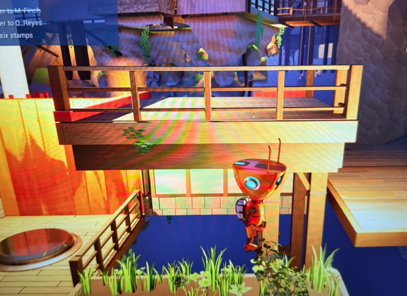
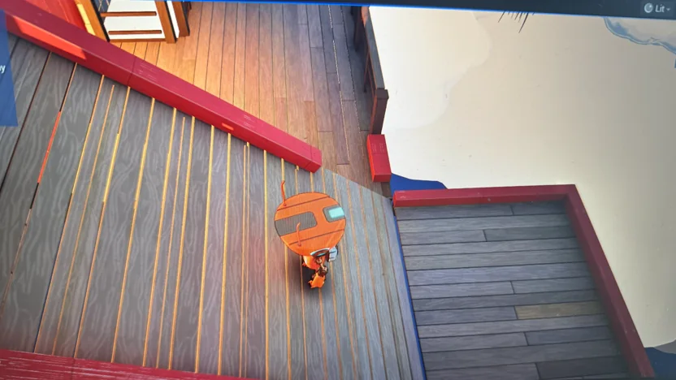
プレイテスト2回目と、残った課題Second Playtest and What Remained
その後のビルドを、私がもう一度通しでプレイしました。1回目と同じく、レベルを知っている私自身のプレイなので、所要時間は単純には比べられません。
I played a later build end to end again. As before, this was my own play with prior knowledge of the levels, so the times are not a like-for-like comparison.
-
目立つ近道で、本来のルートを飛ばせるAn obvious shortcut skips the main route
目的地の手前の近道で、荷物を隙間越しに投げられる。地図がないと、より目立つこちらを選び、本来のルートの多くを飛ばしてしまう。
A shortcut in front of the objective lets the parcel be thrown across a gap. Without a map, players are likely to take this more obvious route and skip much of the main path.
- 私の提案My proposal
- 本来のルートを見やすくし、近道は危険か難しいものにする。Make the main route more visible, and the shortcut riskier or harder.
-
荷物を高台に投げると、パズルを解かずに配達できるThrowing to a ledge bypasses a puzzle
- 私の提案My proposal
- 足場の配置を調整して、迂回できないようにする。Adjust the platform layout to prevent the bypass.
-
敵に会わずに手紙が取れ、リスクとリワードが弱いThe letter can be taken without facing the enemy
- 私の提案My proposal
- 敵と手紙の位置を入れ替える。Swap the positions of the enemy and the letter.
-
ファンがあるので、階段を使う理由がないThe fan makes the stairs pointless
- 私の提案My proposal
- ファンは速いが危険、階段は遅いが安全、という違いをつくる。Make the fan faster but riskier, and the stairs slower but safer.
-
荷物を運びながらファンに入ると操作しにくいThe fan fights parcel carrying
- 私の提案My proposal
- ファンを弱めるか外す。または、迂回できるルートをはっきり示す。Weaken or remove the fan, or provide a clear route around it.
-
次の荷物が遠いThe next parcel is far away
- 私の提案My proposal
- 移動を短くするか、道中にジェットパックを使う課題を置く。Shorten the journey, or add jetpack challenges along it.
うまく機能していた点What worked
周囲より高い位置にあるゴールが目印になり、一本道を強制しなくても進む方向が分かった。主要な地点からゴールが見える状態を維持することを提案しました。
The elevated goal, visible above its surroundings, worked as a landmark: it gave a clear sense of direction without forcing a single corridor. I proposed keeping it visible from key locations.
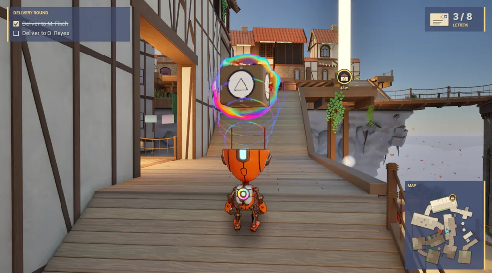
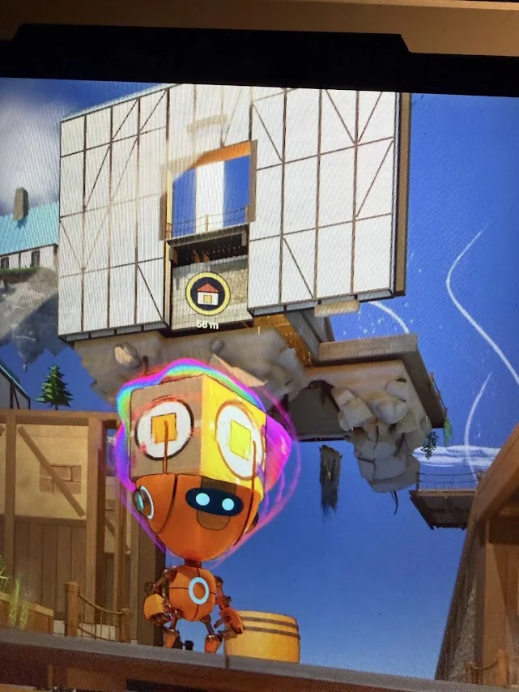
そのほかの担当とクレジットOther Work and Credits
そのほかの担当Other work
- レベルアートの改善、サウンド・音楽の改善、動画制作
- 建物・環境アセット8点と、BGM 3点の候補を調査し、チームに提案
- Level art refinement, sound and music refinement, and the video
- Researched and recommended eight building and environment asset packs and three background music options to the team
チームTeam
- Yusei Nakajima トップダウン図(チームと協力)/草案レベルの改善/プレイテスト/レベルアート/サウンド・音楽/動画 Top-down diagrams (with the team) / draft level improvements / playtesting / level art / sound and music / video
- チームメンバーTeammate レベル形状の調整/オブジェクト配置の調整/案内表示 Level geometry / object placement / signage
- チームメンバーTeammate レベルの物理挙動/敵AI/Blueprint/ナラティブ/ビルド/プロジェクト整理 Level physics / enemy AI / Blueprints / narrative / builds / project cleanup
チームメンバーの氏名は、本人の了承を得ていないため掲載していません。
Teammates' names are omitted because I have not asked for their consent to publish them.
プレイテストは全員で行いました。分担はLDDの作業表(表4.2)にもとづきます。
Playtesting was shared by the whole team. Roles follow the task table in the design document (Table 4.2).
使用アセットAssets
- ベースプロジェクトBase project Stack O Bot(Epic Games)— キャラクター、基本システム、UIなどの土台として使用しています。 Stack O Bot (Epic Games) — the base for the character, core systems, UI, and more.
- BGMMusic "Apple Cider" — Zane Little Music (CC0, OpenGameArt)